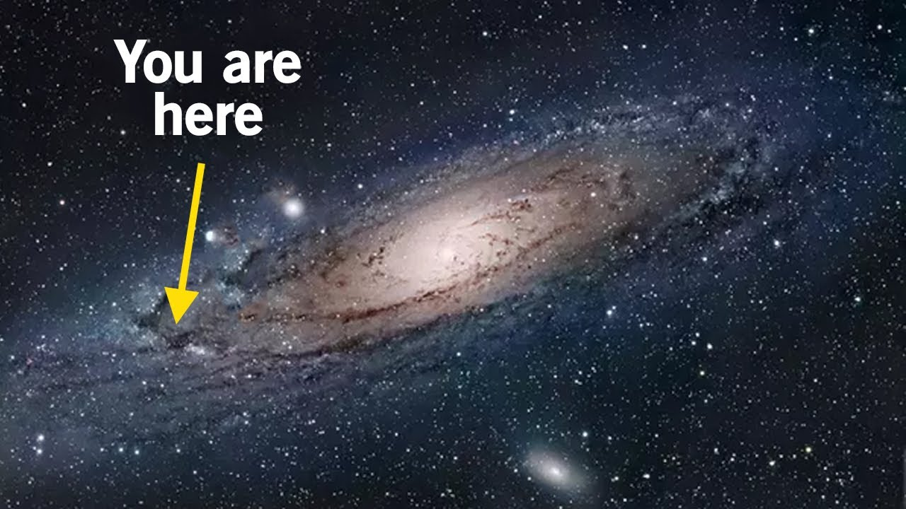

Our universe is ginormous to the point where its scale is beyond our imagination. The actual size of it is unknown but
the size of the observable part of the universe is approximately 93 BILLION light years away in diameter. To appreciate the vastness of our universe,
consider the fact that there are 7.2 Billion people on Earth, which means that there are 28 times more stars in our galaxy alone than there are
people.
It is easy to assume that the only living souls that exist are on Earth in the Milky Way. But with over a dozen billion stars in the Milky Way alone,
and hundreds of billions more in other galaxies, it seems like there must be countless other planets and lifeforms out there that need to be explored.
What if there were other people looking up at the night sky and wondering the same thing, "Is there life beyond my field of sight?" but from the opposite
side of the universe? For the past couple of years, we have turned to the priests and philosophers hoping that they would give a satisfactory answer to this
mind-bending question, but now we can rely on our technology to get justified answers rather than believing what the enlightened believe.
Around half a century ago, SETI which stands for the Search for Extraterrestrial Intelligence began. SETI is known for using the tools of astrology to try and find
someone else's technology out there in the universe, hoping that their technology too, like ours, will be visible over interstellar distances.
The Voyager 1, our farthest space probe from Earth has been launched by NASA to study the outer Solar System and interstellar space beyond the Sun's heliosphere.
It is currently traveling a million miles a day, and after nearly 40 years, has barely left our solar system. Despite the vast distance between the probe and the Earth,
the Voyager 1 can receive and execute commands sent from the NASA base, as well as gather and send back science data. It was only about a month ago that scientists
peered 50 million light-years away to find an extremely rare globular cluster, with far more mass than the Sun, that could birth stars and help explain how galaxies
are formed.
An exoplanet program has been launched by NASA to find unmistakable signs of life on a planet beyond Earth. How soon that can happen depends on two unknowns which are
the actual prevalence of life in the galaxy and how lucky we get as we take those first, exploratory steps towards finding the unknown. Our early planet-finding missions,
such as NASA’s Kepler, or the James Webb Space Telescope, could yield bare-bones evidence of the potentially habitable worlds out there.
But unless we get lucky, the search for signs of life could take decades. Discovering another blue-green marble hidden in the field of stars is like a sand grain on the
beach, and will probably require an even larger imaging telescope.
Until next time,
EMA R.